Abra o Flowlab
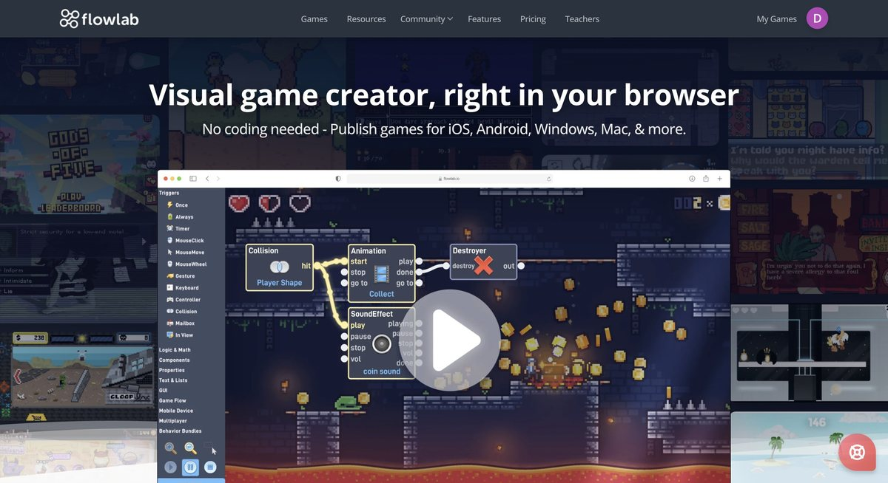
Foto da tela.
No navegador, vá para flowlab.io.
Esta é a página de entrada. No canto de cima à direita tem o seu nome de usuário — se estiver escrito Log in, clique e entre com a sua conta antes de seguir.
- Aparece Log in
- Clique nele e entre com o e-mail e a senha da sua conta. Sem entrar, o jogo que você fizer não fica salvo.
- A página está em inglês
- Está certo: o Flowlab é em inglês. Esta aula diz, em cada passo, onde clicar.
Entre em MY GAMES

O clipe repete sozinho. Repare onde o cursor vai antes de clicar.
Foto da tela.
No alto à direita, clique em My Games.
É aqui que ficam todos os jogos que você fizer. Se esta for a sua primeira vez, a lista está vazia — e tudo bem.
- Não acho My Games
- Ele fica na mesma linha do logotipo, bem no canto direito, ao lado da bolinha com a sua inicial.
- Minha lista tem jogos que não sou eu que fiz
- Então você entrou com outra conta. Clique na bolinha do canto e troque de conta.
Crie um jogo novo
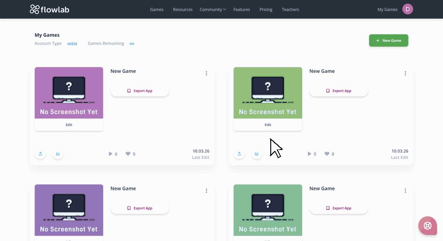

O clipe repete sozinho. Repare onde o cursor vai antes de clicar.
Foto da tela.
Clique no botão verde + New Game, no canto direito.
Abre uma janelinha para escolher por onde começar.
- O botão verde não aparece
- Role a página para cima. Ele fica na mesma linha do título My Games.
- Abriu um jogo em vez da janelinha
- Você clicou num jogo da lista. Volte com a seta do navegador e clique no botão verde.
Escolha o PROJETO VAZIO
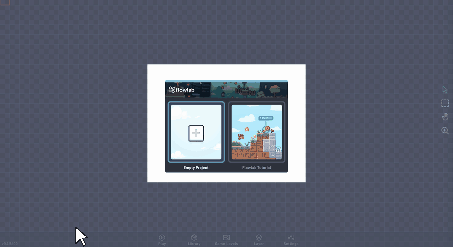

O clipe repete sozinho. Repare onde o cursor vai antes de clicar.
Foto da tela.
Clique na figura da esquerda, a do + grande, embaixo da qual está escrito Empty Project.
Clique na figura, não no nome — o nome não responde.
- Cliquei no nome e não aconteceu nada
- Quem responde é a figura de cima, não o texto embaixo dela.
- Escolhi o Flowlab Tutorial sem querer
- Volte para My Games, apague esse jogo nos três pontinhos e comece de novo.
Conheça a tela
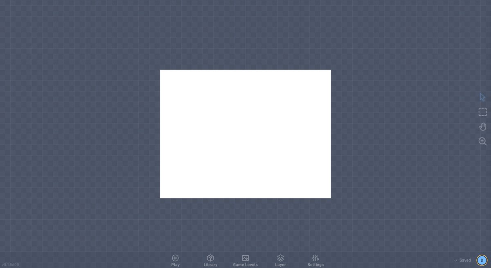
Foto da tela.
Antes de construir, repare em três coisas:
1. A folha branca do meio é o seu mundo. É nela que você vai colocar as coisas.
2. A fileira de baixo tem Play, Library, Game Levels, Layer e Settings.
3. No canto de baixo à direita aparece Saved: o Flowlab salva sozinho, o tempo todo.
- Minha folha branca está num tamanho diferente
- Não tem problema. Ela é o mundo do jogo e o tamanho pode mudar com o tamanho da janela.
Clique na grade para criar o jogador
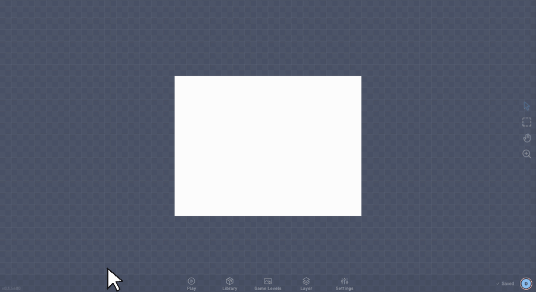
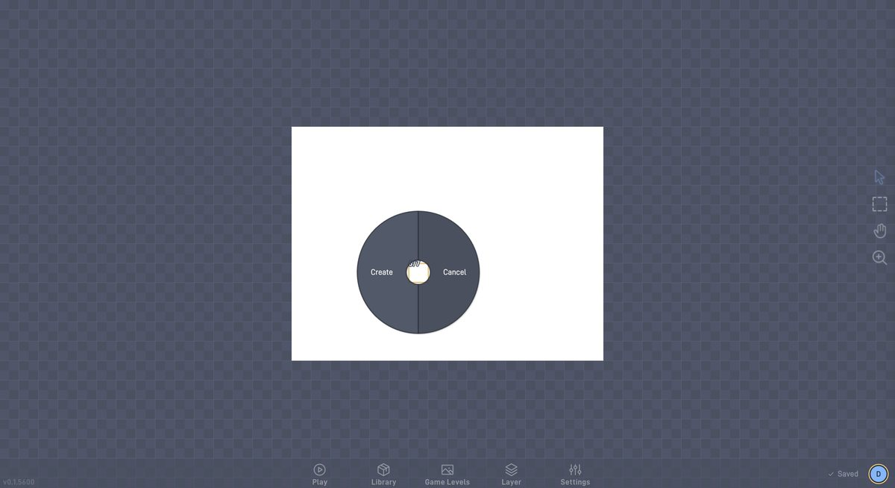
O clipe repete sozinho. Repare onde o cursor vai antes de clicar.
Foto da tela.
Clique uma vez dentro da folha branca, mais para a esquerda e no meio da altura.
Abre uma roda com duas metades: Create e Cancel.
- Não aparece roda nenhuma
- Você clicou fora da folha branca. Clique dentro dela.
- Apareceu Clone, Edit, Delete
- Essa é a roda de um objeto que já existe naquela casa. Clique em Cancel e escolha uma casa vazia.
Escolha CREATE
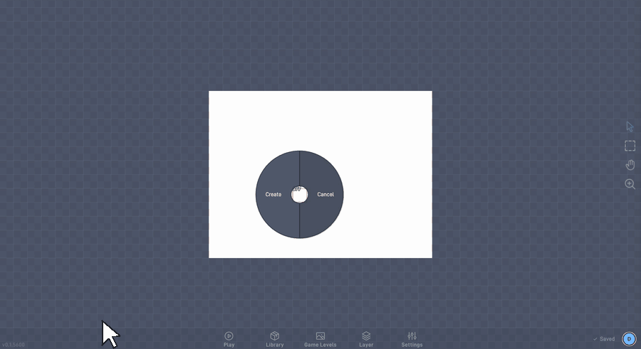
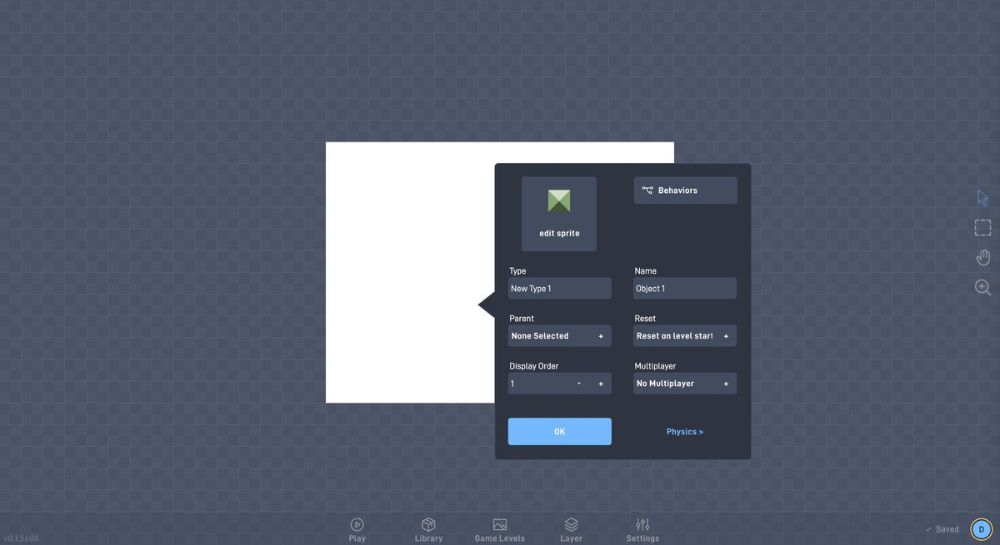
O clipe repete sozinho. Repare onde o cursor vai antes de clicar.
Foto da tela.
Clique na metade Create.
Abre o painel do objeto: é aqui que todo objeto do jogo ganha nome, desenho e comportamento.
- Cliquei em Cancel sem querer
- Sem problema: clique de novo na mesma casa e escolha Create.
Dê o nome JOGADOR
Foto da tela.
No campo Name, apague o que está escrito e escreva Jogador.
Depois aperte Tab — não aperte Enter: o Enter fecha o painel antes da hora.
Este nome é levado a sério: daqui a pouco você vai procurar o Jogador na lista, e é por ele que você o encontra.
- O painel fechou
- Você apertou Enter. Clique na casa do objeto, escolha Edit e escreva o nome de novo, terminando com Tab.
- Não consigo apagar o que estava escrito
- Dê dois cliques dentro do campo para selecionar tudo e escreva por cima.
Abra o editor de desenho
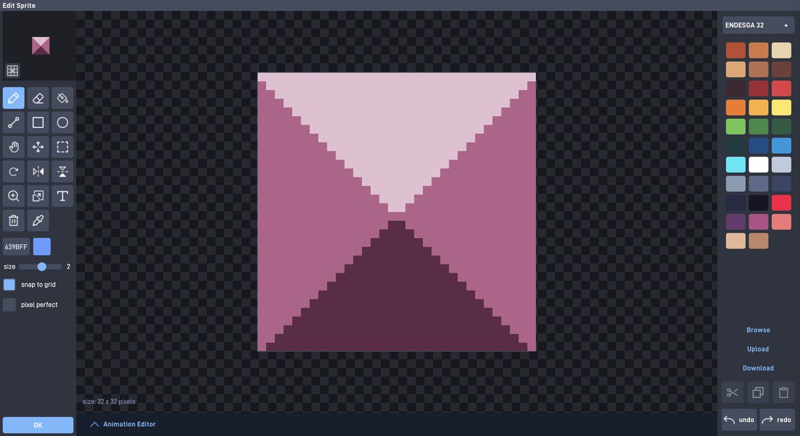
Foto da tela.
Clique em edit sprite, no quadradinho do alto do painel.
Abre o editor de desenho: uma folha quadriculada no meio, as ferramentas à esquerda e as cores à direita.
- Abriu outra coisa
- Volte e clique exatamente no quadradinho com o desenho, acima das palavras edit sprite.
Pinte o jogador de azul
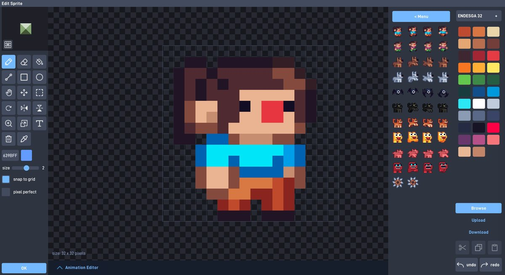
Foto da tela.
Agora pinte:
1. Clique na ferramenta balde (a terceira da primeira fileira, à esquerda).
2. Clique num azul da paleta da direita.
3. Clique dentro do desenho, nas três partes dele — o desenho que vem pronto tem três pedaços, e o balde pinta um de cada vez.
Quando os três estiverem azuis, clique em OK, no canto de baixo à esquerda.
- Só uma parte ficou azul
- O balde pinta uma região por vez. Clique nas outras partes também.
- Pintei fora e sujou tudo
- Use o undo, no canto de baixo à direita do editor de desenho.
- Quero outra cor
- Pode. Só lembre de qual escolheu: a aula vai falar em 'o azul' para dizer o jogador.
Abra as regras de física
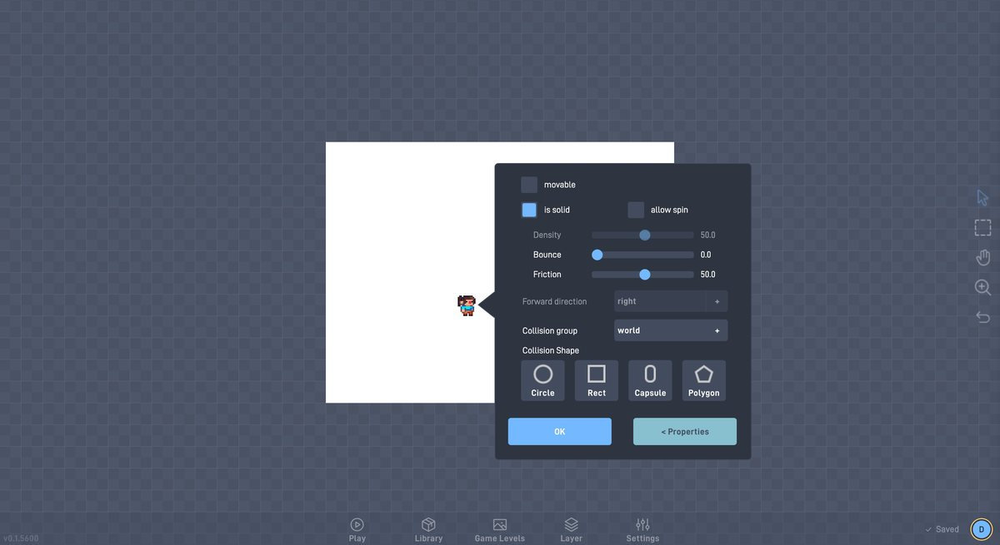
O clipe repete sozinho. Repare onde o cursor vai antes de clicar.
Foto da tela.
De volta ao painel do objeto, clique em Physics >, no canto de baixo à direita.
Física é o que decide se uma coisa cai, se empurra as outras e se o chão a segura.
- Não acho o Physics
- Ele é o texto azul do canto de baixo à direita do painel, ao lado do botão OK.
Marque MOVABLE
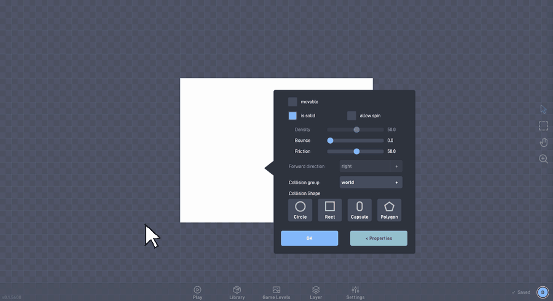
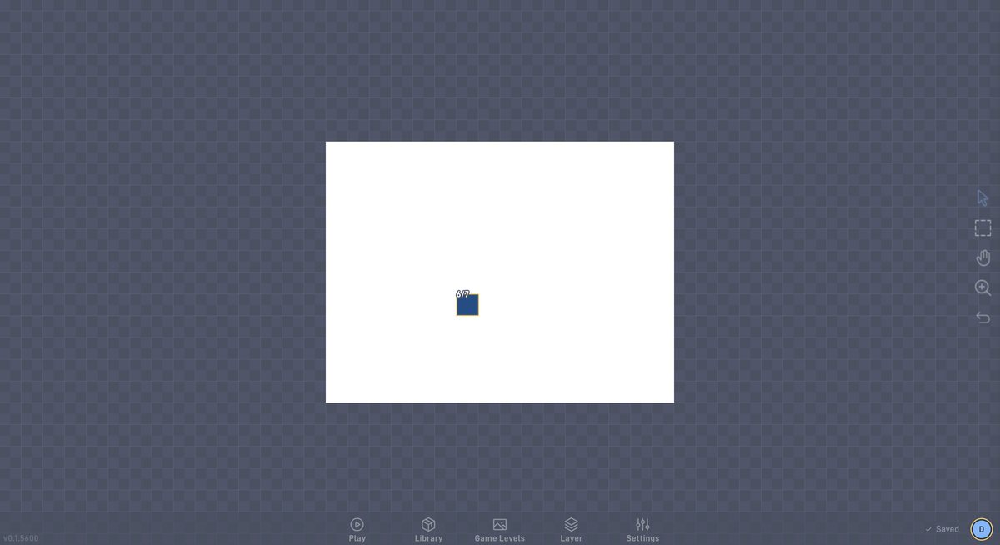
O clipe repete sozinho. Repare onde o cursor vai antes de clicar.
Foto da tela.
Clique na caixinha movable, a primeira do painel.
movable quer dizer pode se mexer. Sem ela, o boneco fica pregado no lugar e nenhum comando faz ele andar.
- A caixinha não fica azul
- Clique bem em cima do quadradinho, não na palavra.
- Sumiram as opções de Density
- Elas ficam acinzentadas enquanto movable está desmarcado. Marque-o primeiro.
Dê o peso certo ao jogador
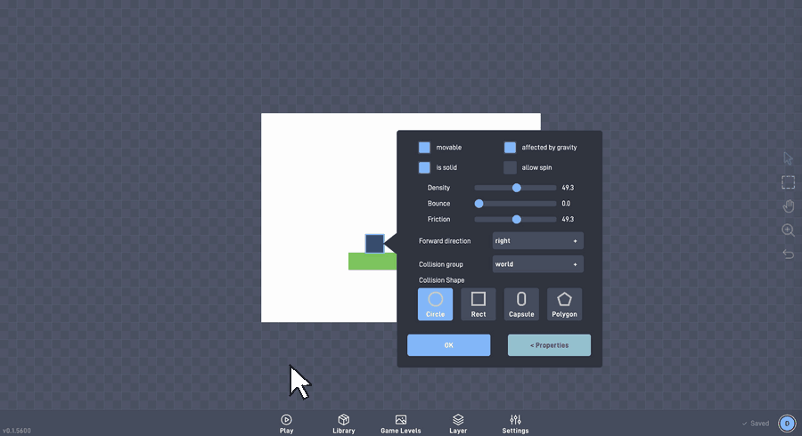
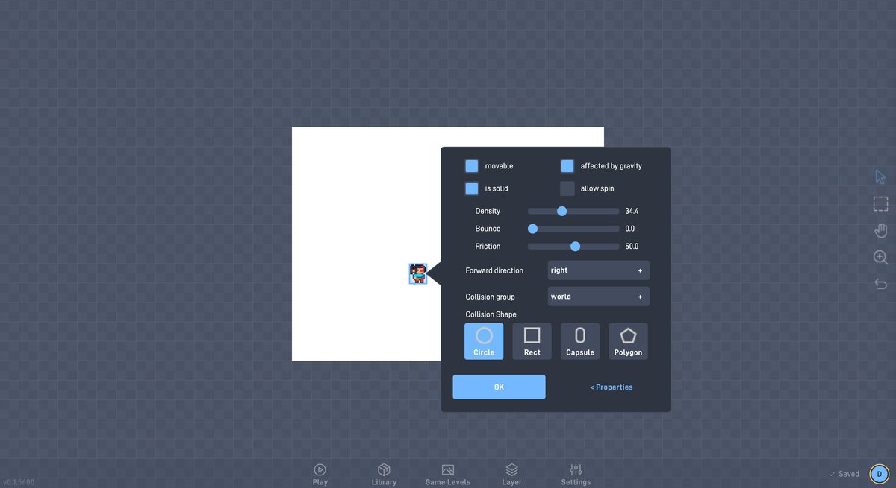
O clipe repete sozinho. Repare onde o cursor vai antes de clicar.
Foto da tela.
Ainda na física, mexa em dois controles:
1. Em Density (peso), clique na barrinha um pouco antes da metade, até o número ao lado ficar perto de 30. A barrinha marca o valor onde você clica: se passar de 30, clique um pouco mais para a esquerda; se ficar abaixo, um pouco mais para a direita.
2. Em Friction (atrito), clique na ponta direita da barrinha, para ficar 100.
Isto não é enfeite. Leve demais, o boneco sai voando a cada toque de tecla e passa por cima da moeda sem encostar nela. Pesado demais, ele fica tão grudado no chão que nem pula — e no passo 14 você vai dar a ele justamente o pulo. Perto de 30 ele dá passos curtos, a moeda sente o toque, e o pulo funciona.
- O número foi para 100 e eu queria 30
- Você clicou perto da ponta direita. Clique mais perto do começo da barrinha.
- O número foi para 3
- Você clicou na ponta esquerda. Clique um pouco mais para a direita, num terço da barrinha.
- Density está cinza e não muda
- Volte ao passo 12: ele só funciona com movable marcado.
- Meu boneco continua voando
- Confira os dois: peso e atrito. Um só não resolve.
Dê movimento ao jogador
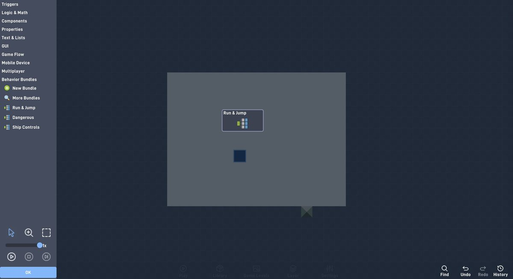
Foto da tela.
Feche a física no OK e, no painel do objeto, clique em Behaviors.
Abre a mesa de blocos. Na coluna da esquerda, lá embaixo, clique em Behavior Bundles e arraste Run & Jump para o meio da mesa.
Esse pacote já vem pronto: ele é quem faz o boneco correr com as setas e pular.
- Arrastei e não ficou nada
- Puxe de novo, mais devagar, e solte no meio da área escura.
- Não acho Behavior Bundles
- É a última linha da coluna da esquerda. Clique nela para abrir a lista.
- Fechei e o bloco sumiu
- Espere uns segundos antes de fechar: o Flowlab precisa de um tempinho para guardar. Abra de novo e confira se ele está lá.
Volte para o mundo
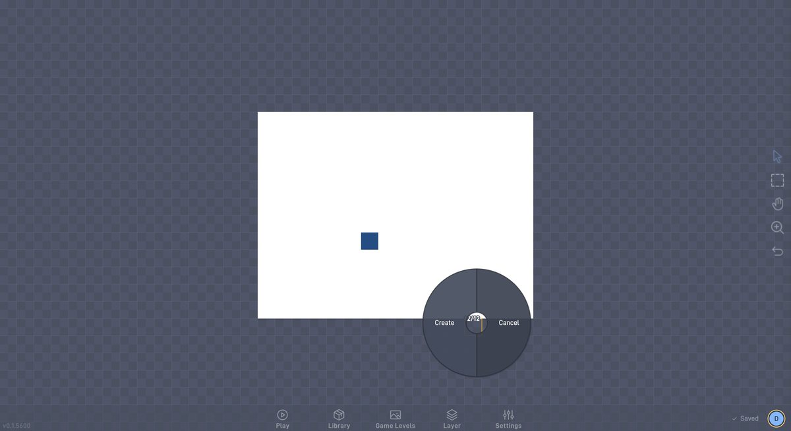
Foto da tela.
Clique em OK no canto de baixo à esquerda (fecha a mesa de blocos) e depois em OK no painel do objeto (o botão azul).
Você volta a ver a folha branca com o seu quadrado azul nela.
- Fiquei preso numa tela de blocos
- O OK da mesa de blocos é o do canto de baixo à esquerda, azul e comprido.
Faça o chão
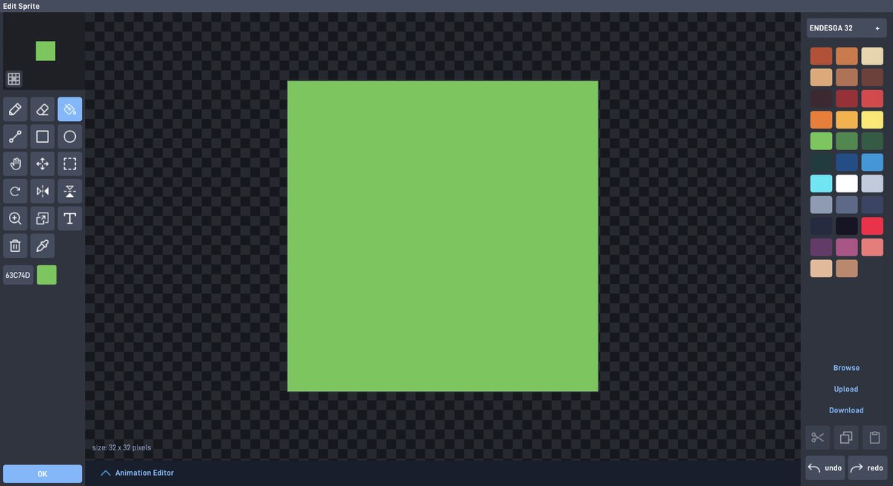
Foto da tela.
Clique numa casa logo abaixo do jogador e escolha Create.
Faça igual ao que já sabe:
1. No Name, escreva Chao e aperte Tab.
2. Em edit sprite, pinte as três partes de verde e clique em OK.
3. Feche o painel no OK azul.
O chão não precisa de física: ele fica parado, e é isso que a gente quer.
- Meu chão ficou longe do jogador
- Ele tem de ficar na casa imediatamente abaixo. Clique no verde, escolha Delete e faça de novo na casa certa.
Estenda o chão com CLONE
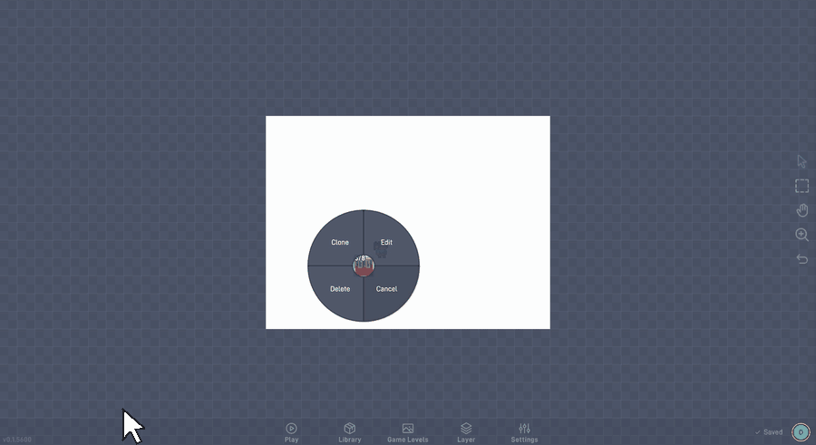
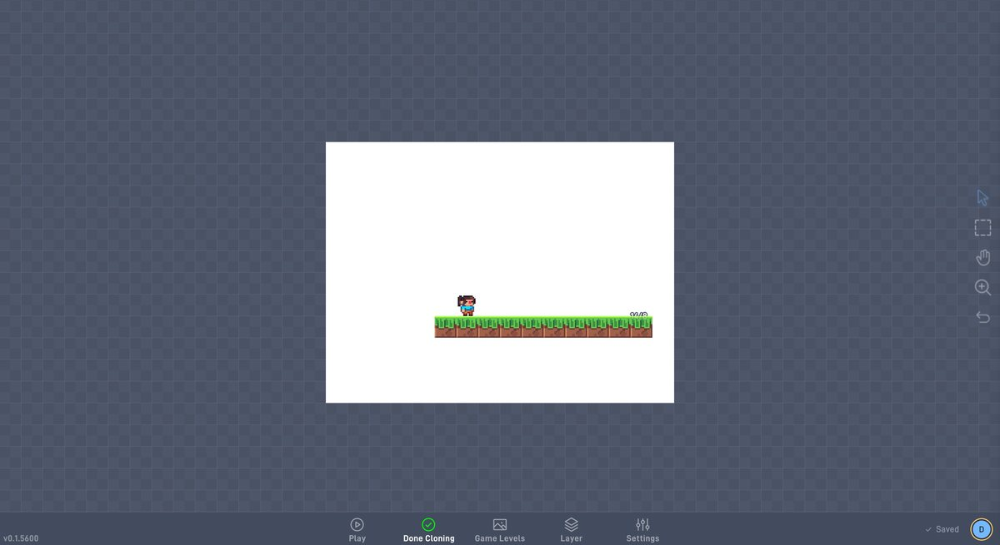
O clipe repete sozinho. Repare onde o cursor vai antes de clicar.
Foto da tela.
Um quadradinho de chão não segura ninguém. Vamos repeti-lo:
1. Clique no quadrado verde e escolha Clone.
2. A fileira de baixo muda para Done Cloning: enquanto ela estiver assim, cada clique na folha põe outro pedaço de chão.
3. Clique nas casas ao lado da primeira, uma colada na outra, até formar uma faixa larga embaixo do jogador.
4. Clique em Done Cloning para parar.
- Ficaram buracos entre os pedaços
- Clique exatamente nas casas vizinhas. Um buraco no chão faz o boneco cair pelo vão no meio do jogo.
- Não consigo parar de clonar
- Clique em Done Cloning, no mesmo lugar onde antes estava escrito Library.
- Pus um pedaço fora da folha
- Clique nele e escolha Delete.
Faça a moeda
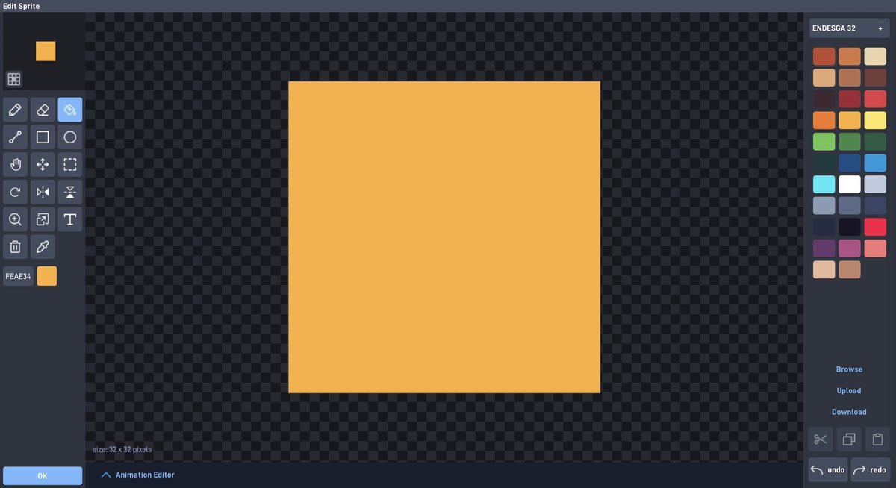
Foto da tela.
Agora a estrela do jogo. Clique numa casa à direita do jogador, na mesma altura dele — duas casas de distância é bom — e escolha Create.
1. No Name, escreva Moeda e aperte Tab.
2. Em edit sprite, pinte de amarelo e clique em OK.
A moeda tem de ficar na mesma linha do jogador. Mais alta, ele passa por baixo e nunca encosta.
- A moeda ficou flutuando
- Ela precisa estar na linha por onde o boneco anda. Clique nela, escolha Delete e ponha na casa certa.
- A moeda ficou muito longe
- Duas casas bastam. Longe demais, o boneco ganha velocidade e passa direto.
Ensine a moeda a sumir
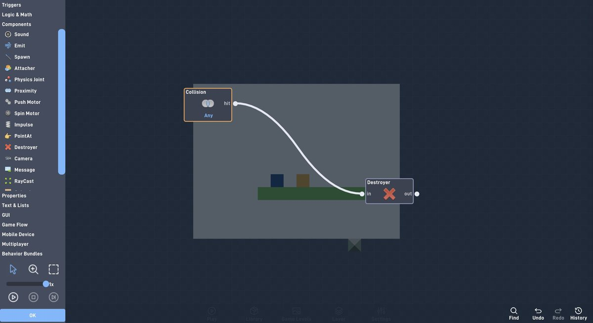
Foto da tela.
Aqui é a programação de hoje. Com o painel da Moeda aberto, clique em Behaviors e monte dois blocos:
1. Na coluna da esquerda, em Triggers, arraste Collision para a mesa. Ele é o quando: quando alguém encostar em mim.
2. Em Components, arraste Destroyer. Ele é o o quê: suma.
3. Agora ligue o fio: arraste da bolinha hit do Collision até a bolinha in do Destroyer.
Lido em voz alta: quando alguém encostar em mim, eu sumo.
Agora feche as duas telas: OK no canto de baixo à esquerda (fecha a mesa de blocos) e OK azul no painel da Moeda. Você precisa voltar a ver a folha branca para poder jogar.
- O fio não fica
- Comece o arrasto em cima da bolinha e solte em cima da outra bolinha. Devagar.
- Liguei no lugar errado
- Clique no fio e aperte Delete, ou use o Undo do canto de baixo à direita.
- Sumiu tudo quando fechei
- Espere uns segundos antes de fechar e confira abrindo de novo.
- Fechei e não acho o Play
- Falta fechar o painel do objeto: o OK azul, à direita.
Jogue, pegue a moeda e mande o link
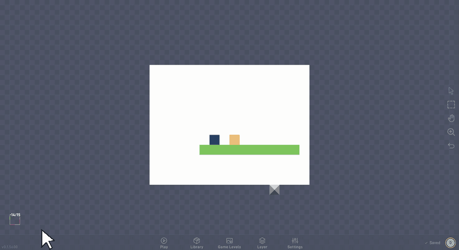
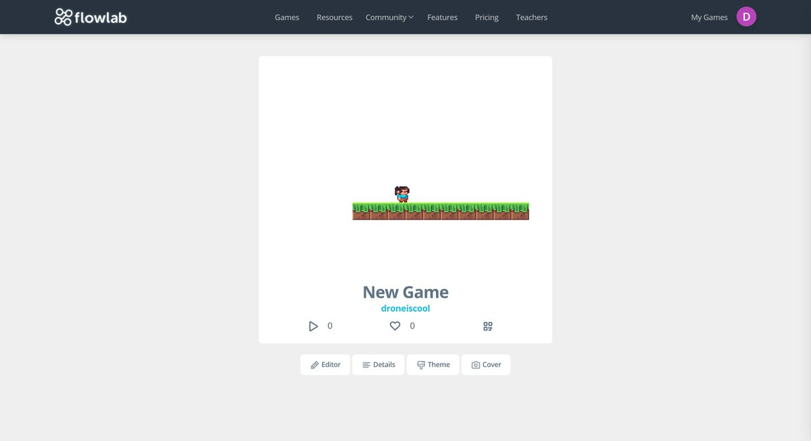
O clipe repete sozinho. Repare onde o cursor vai antes de clicar.
Foto da tela.
Clique em Play, na fileira de baixo.
O jogo abre numa página só dele. Clique uma vez dentro do jogo (para o teclado ir para lá) e use a seta para a direita para andar até a moeda.
Quando o boneco encostar, a moeda some. É o seu primeiro programa funcionando.
O endereço desta página é o link do seu jogo: dá para mandar para a sua família jogar.
- O boneco não anda
- Clique uma vez dentro do jogo antes de usar as setas; o teclado precisa estar 'dentro' dele.
- Ele cai e some
- Tem buraco no chão, ou ele chegou ao fim da faixa verde. Volte e estenda o chão.
- Ele passa pela moeda e ela não some
- É velocidade: volte ao passo 13 e confira Density perto de 30 e Friction em 100.
- A moeda some sozinha no começo
- O chão está encostando nela. Suba a moeda uma casa.